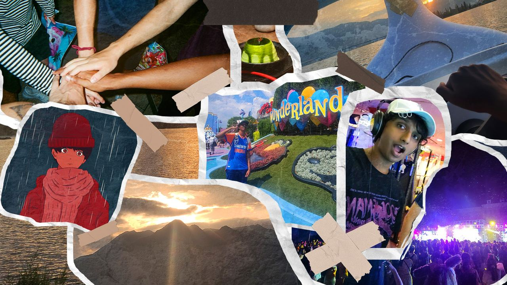
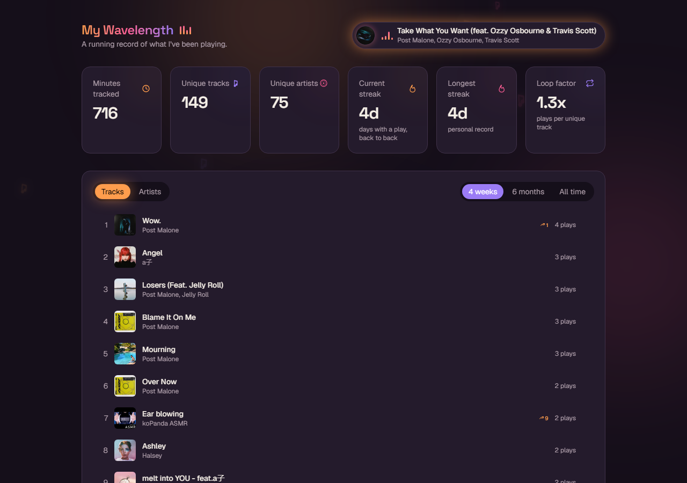
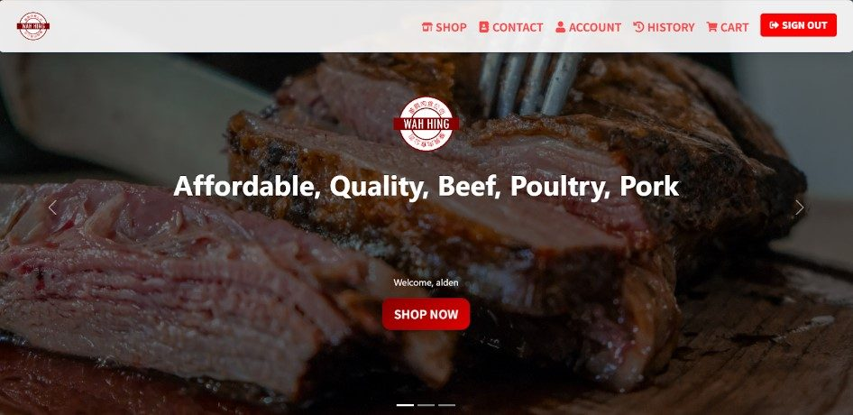

About Me

Pleased to meet you! My name is Aashik Ilangovan. I'm a Software Engineer with a Master of
Management and a Bachelor of Science in Software Engineering, both from the University of
Calgary, alongside a minor in Entrepreneurship and Enterprise.
My academic and professional journey has been marked by a deep passion for technology, creation and
appreciation for both the industry as well as the amazing people I've encountered along the way. I
enjoy blending hands-on software development with a business analyst's eye for process and
stakeholder needs, and I'm always seeking opportunities that challenge me and allow for continued
growth. Feel free to check out any of projects linked here!
When I'm not coding, you can often find me enjoying nature, travelling or playing sports outside
during summer or in the creative arts (Music, Art) at home during the winters.
I hope you are able to learn a little bit more about me through this brief portfolio of my work,
experience and overall goals and ambitions for the future!
Highlighted Projects
Click a project to expand it and see more.
✦
Personal Project
My Wavelength — Personal Spotify Analytics Dashboard
★ My personal favorite — definitely check this one out.

A passion project pairing my love of music with data analytics: a personal dashboard that
continuously ingests my own Spotify listening history and visualizes it with a
warm, electric, music-themed, custom-built UI - top tracks/artists/albums with day-over-day
rank-change badges, a listening activity heatmap with peak-time insights, monthly/weekly
listening trends, streak stats, and a live "now playing" widget with a spinning vinyl.
- Built an automated ETL pipeline (GitHub Actions + Spotify Web API) that upserts new
listening history into a hosted database on a schedule, plus a daily snapshot job that
powers day-over-day rank-change tracking on top tracks/artists
- Designed a warm, electric, custom-themed UI/UX with hand-built charts, Framer Motion
animations, and music-themed visual flourishes rather than an off-the-shelf dashboard kit
- Worked around real-world API constraints (Spotify deprecating endpoints/fields
mid-project) by redesigning the analytics around the data that remained available
- Utilized: Next.js,
TypeScript, Tailwind CSS, Recharts, Framer Motion, Turso (libSQL), GitHub Actions
✦
Academic Project
Streamix — Home Theatre PC Application
Demonstrative video of a HTPC application, Streamix. The application provides an immersive,
inclusive, and enriching experience for users allowing them to perform actions such as browsing,
rate media, create and add to lists, watch media etc.
- Responsible for all front-end designs and development, crafting a visually appealing
interface and experience for users
- Co-developed back-end system and embedded attributes (Spotify Player, YouTube Live
Player)
- Used Task-Centered System Design approach to develop the application using real user
feedback
- Developed BPMN process models and AS-IS/TO-BE customer journey maps to analyze fragmented
media consumption workflows and reduce cross-platform switching effort
- Utilized: HTML, CSS,
JavaScript, Adobe Photoshop & Premiere Pro
✦
Industry / Professional
Online Meat Retailer Software Solution

The Wah Hing Online Retailer Application was designed to provide a seamless shopping experience
for
customers and improve efficiency for admins, replacing the company’s manual, paper-based
ordering
system. By adopting an agile development approach, my team and I incorporated user feedback to
create an intuitive, user-friendly platform that streamlined operations and enhanced Wah Hing’s
online presence.
- Acted as Project Manager for a 6-person team, coordinating deliverables and stakeholder
communications, securing 100% sponsor approval on the final solution
- Responsible for all back-end systems, integration of API, and relevant testing
- Co-developed front-end system by providing all initial designs for the application as
well as initial site designs prior to additional member renditions
- Conducted stakeholder interviews and requirements elicitation sessions to inform system
design, workflow improvements, and UI/UX decisions
- Utilized: MongoDB,
Express.js, React.js, Node.js, Adobe Photoshop, Docker (hosting), Exploratory and Unit
Testing (Jest)
✦
Hackathon Project — Calgary Hacks
School Life Sims
A 2D life-sim game built in Unity over the 2022 Calgary Hacks Hackathon weekend —
branching mini-scenarios, custom sprite art, and a playable build shipped under a tight
hackathon deadline.
- Designed and built a branching, story-driven "school life" simulator in Unity (C#) under
hackathon time constraints
- Implemented multiple playable mini-scenarios and dialogue-choice paths with custom UI and
sprite art
- Handled gameplay logic, scene management, and asset integration across a rapid
prototyping sprint
- Utilized: Unity
Game Engine, C#, OpenGL, Adobe Photoshop
✦
Industry / Professional
Warehouse Optimization & Inventory Analysis
Business process analysis on a 27,000 sq. ft. warehouse holding ~455,000 items for
U Technology, benchmarking industry practices (Amazon, IKEA, Zara, DHL) to design a
data-driven inventory optimization strategy.
- Identified inefficiencies in inventory flow, space utilization, and retrieval performance
through hands-on process analysis
- Developed a data-driven inventory optimization strategy using location-based inventory
logic and frequency-based slotting to improve retrieval accuracy
- Designed a standardized inventory classification and location coding system aligned with
ERP principles to improve data consistency and traceability
- Created process maps, layout models, and structured documentation supporting future
digital transformation and ERP/WMS integration
- Utilized: Business
Process Mapping, ERP/WMS Concepts, Excel
Skills
Here are some languages, frameworks, and skills I have developed over my academic and professional
career
Programming Languages
- Java
- C
- C++
- C#
- Python
- JavaScript
- TypeScript
- VBA
- VB6
- HTML
- CSS
- SQL
Frameworks & Libraries
- React.js
- Next.js
- Node.js
- Express.js
- .NET Framework
- Bootstrap
- Tailwind CSS
Databases & Cloud
- PostgreSQL
- MySQL
- MongoDB (NoSQL)
- Oracle Database
- Oracle Digital Assistant
- AWS (Certified Cloud Practitioner)
Business & Systems Analysis
- Requirements Gathering
- User Stories
- Business Process Analysis (BPMN)
- Process & Journey Mapping
- Stakeholder Management
- Agile / Scrum
Software Testing
- JUnit
- Selenium
- Postman
- Jest
Tools & Platforms
- Docker
- Git
- Power BI
- Tableau
- Figma
Design & Further Tools
- AutoCAD
- Adobe Premiere Pro
- Graphic Design and Art (Adobe Photoshop, Canva, Clip Studio Paint)
- Audio Design (FL Studio, Audacity)
Experience
Education
- Master of Management, University of Calgary (Aug 2025 – Apr 2026)
- Bachelor of Science in Software Engineering, University of Calgary
(Sep 2019 – Jun 2025) — Minor in Entrepreneurship & Enterprise
Junior Software Engineer, U Technology Corp.
May 2026 – Present
- Developed a full-stack specification management platform that digitizes operational
workflows and improves data consistency, traceability, and structured decision-making,
using Next.js, React, PostgreSQL, and TypeScript.
- Designed reusable data models, workflow logic, and templates to support scalable document
generation, storage, and approval processes.
- Built system functionality across frontend, backend, and database layers to support
structured data capture and workflow-based reporting.
- Collaborated with engineering and marketing stakeholders in an Agile environment to
gather requirements, prioritize features, and deliver iterative system improvements.
- Contributed to application architecture, testing, documentation, and AWS deployment
planning to support scalable, production-ready systems.
Systems Developer Student, Canadian Natural Resources Limited
January 2023 – August 2023
- Developed and employed user-friendly and responsive front-end interfaces for in-house
applications, utilizing .NET Framework and C#.
- Implemented back-end databases for front-end user interfaces, using Oracle Database and SQL.
- Analyzed existing business processes and identified inefficiencies, contributing to
~30% improvement in system performance and decision-making speed.
- Worked with end-users through Agile iterative development to consistently advance prototypes
into final products.
- Developed and automated Excel-based reporting tools (PivotTables, VLOOKUP, VBA), improving
data accuracy and reducing manual reporting effort.
- Collaborated with the Engineering Information Management team, gaining experience with
industry tools like Smart P&ID, Smart3D, and Drawing Manager.
Software Engineering Intern, Spectrum7 Technologies
May 2022 – August 2022
- Gained hands-on experience in Oracle Digital Assistant (ODA) by developing simulated
chatbots for Food Delivery Services and Customer Assistance.
- Solved real-time consumer issues using chatbot functionalities, such as logging concerns and
additional user-provided notes.
- Automated responses from keywords to create human-like feedback from chatbots.
Leadership/Volunteer Experience
Final Year Capstone Project Manager
September 2023 – April 2024
- Led as the Project Manager for a 6-person team, coordinating team activities and
facilitating communication with TA's, instructors, and sponsor representatives, securing
100% sponsor approval on the final solution.
- Ensured timely and accurate completion of deliverables, assigning tasks, providing updates
to relevant members, and mediating group discussions.
- Acted as the primary spokesperson for the team, integrating Agile development processes.
- Responsible for ensuring sponsor satisfaction by maintaining constant feedback and
collaboration with sponsor representatives.
Volunteer Associate, Diabetes Canada
2016 – 2019
- Went door-to-door raising awareness, providing information, and educating the public about
Diabetes Canada’s mission and efforts.
- Raised over $300 as an individual by collecting donations and encouraging community support
for diabetes research and care.
Calgary Hacks Hackathon
2021 – 2023
- Participated in the Calgary Hacks Hackathon three years running, developing simulators
and other rapid-prototype projects under time constraints — including
School Life Sims, a 2D life-sim game.